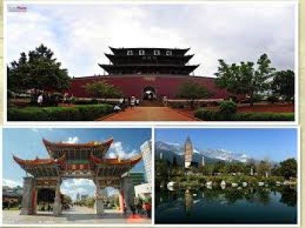

Culture préhistorique - le charme de la culture ancienne au Yunnan
La culture Dian antique —— Un message de bronze découvert dans le Yunnan
Culture Ailao —— Histoire des peuples multiethniques
爨 Culture-la perle lumineuse dans la brume de l'histoire
Culture de Dali à Nanzhao —— Hua Cai
Culture de l'immigration —— empreintes de pionniers
Protéger la culture du pays —— un représentant typique de l'esprit du Yunnan
Culture de guerre anti-japonaise: magnifique épopée de la guerre civile et militaire du Yunnan
Culture du mythe —— Dans le royaume du mythe
Peinture de falaise art primitif de la culture sur les falaises